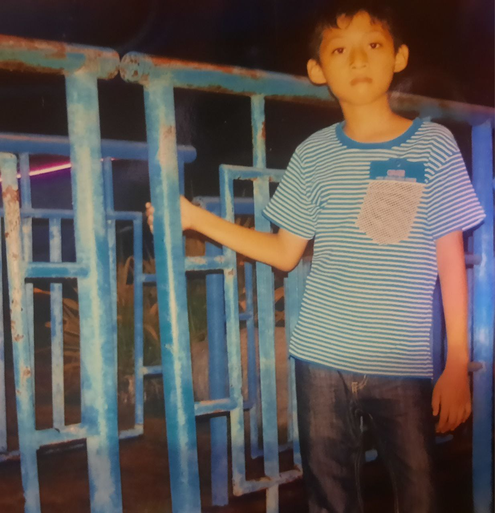

MY PROFILE |
My Tribute | About | Social media | Contact |
| |
| Hello Guys!! My name is Linzayasoe. I was born in Burma. My birth was on 26 January 2005. |
 |
I've collected a lot of nicknames over the years, ranging from Linzay and Zaya to Grim Reaper and even Toothpaste. Some friends call me Kglay and Kalay. Nicknames are a fun part of life, each with its own unique story and meaning.
I spent my childhood with my grandparents until I turned 12. After that, I moved in with my parents. I have a special dream: I want to become a gardener when I reach the age of 50. I find so much joy in planting trees and flowers. Additionally, I have a deep affection for babies, so I regularly visit an orphanage to spend time with them. These experiences make my life even more fulfilling and bring happiness into my entire world.
My personality, as an ISFP-T, is a unique traits that make me a fascinating individual. With a mind that is 100% introverted, I thrive in the inner world of ideas and introspection, finding solace and creativity in my own thoughts.But sometimes I become weird.My observant nature shows me possess a deep emotional awareness that allows me to connect with others on a profound level. My prospecting tendency keeps me open to new possibilities, ever ready to resist the unexpected.My personality is a captivating mix of introverted reflection, emotional depth, and making me a truly intriguing and enigmatic presence in the world.
|
I started my educational journey fromES4E School, where I attended from elementary to high school.Then, I transferred to Thuzar Education Centre to pursue my O-level education, and I'm thrilled to say that I successfully passed my O-level exams. Currently, I'm continuing my academic goals at GUSTO Private University. This journey has been marked by growth and learning, and I'm excited to see where my university education will take me.
I have several life goals. First, I want to study in Canada. By the time I'm 20, I hope to be studying at a university abroad. At 25, I have a aim to get a well-paid job. By the age of 30, I'd like to own a car, a house, and start my own business. When I turn 40, my dream is to retire from business and enjoy my time surrounded by nature.
|
I have a few hobbies I love. Playing football with my neighbors is a daily activity, and Chelsea is my favorite club. I also enjoy reading books, especially history, novels, and political literature. Oddly, I've never tried romance novels. I used to play badminton, but it's been a while since I've picked up a racket. These hobbies add a lot of fun to my life.
Gone Gone Gone by Philips Philips |
Perfect by Ed.Sherran |
Take me to the river by Alex Yurkiv |
I have a deep love for all animals, but it is the kitties that hold a special place in my heart. Their adorable faces and enchanting eyes attract my soul. I'm truly grateful to God for creating these exquisite little creatures. They aren't just pets; they're like part of my family.
Name - Ant Kyaw |
Name- Ant Kyaw |
Meta link |
 Instragm link |
Telegram link |